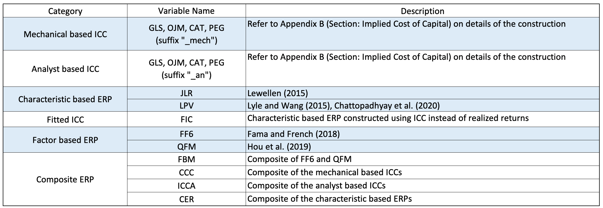

Description:
This website provides data for the paper: "Evaluating Firm-Level Expected-Return Proxies: Implications for Estimating Treatment Effects".
For matters relevant to the data provided here, please contact lee.so.wang2021 (at) gmail.com .
The variables in this data are the following:

Abstract:
"We introduce a parsimonious framework for choosing among alternative expected-return proxies (ERPs) when estimating treatment effects. By comparing ERPs’ measurement error variances in the cross-section and in the time series, we provide new evidence on the relative performance of firm-level ERPs nominated by recent studies. Generally, "implied-costs-of-capital" metrics perform best in the time series, whereas "characteristic-based" proxies perform best in the cross-section. Factor-based ERPs, even the latest renditions, perform poorly. We revisit four prior studies that use ex ante ERPs and illustrate how this framework can potentially alter either the sign or the magnitude of prior inferences."
Links:
Paper Link :
Evaluating Firm-Level Expected-Return Proxies: Implications for Estimating Treatment Effects
Download Link (ERPs)
Expected Monthly Returns:
Stata (.dta) |
Delimited (.csv)
Expected Annual Returns:
Stata (.dta) |
Delimited (.csv)
Download Link (Coefficients for JLR, LPV, FIC)
Expected Monthly Returns:
Stata (.dta) |
Delimited (.csv)
Expected Annual Returns:
Stata (.dta) |
Delimited (.csv)
How to cite this data:
Lee, Charles M.C., Eric C. So, and Charles C.Y. Wang (2021). "Evaluating Firm-Level Expected-Return Proxies: Implications for Estimating Treatment Effects." Review of Financial Studies 34(4): 1907–1951.